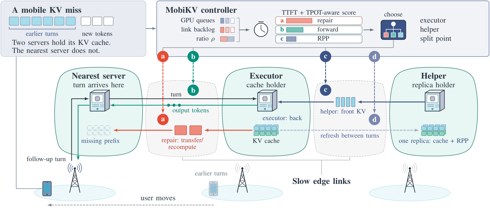
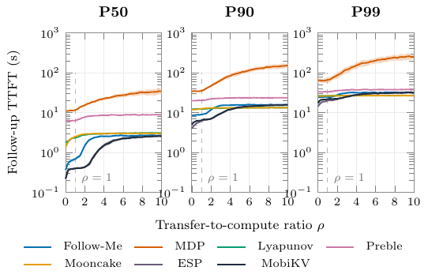
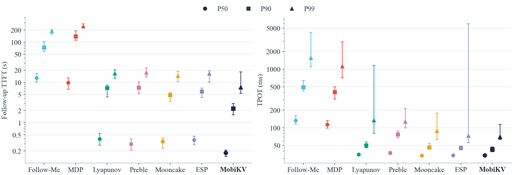

Choose the executor
Combine GPU queues, link backlogs, cache holders, and TPOT stall debt in each scheduling decision.
Research artifact · 2026
1Independent Research · 2Shenzhen MSU-BIT University · 3Simon Fraser University · 4Shenzhen University
MobiKV schedules multi-turn LLM sessions across mobile-edge servers by combining cache-aware placement, replica repair, and replica-assisted parallel prefill. A measured transfer-to-compute ratio determines when a secondary KV replica should become a compute helper.

Contents
Snapshot
MobiKV separates where a turn executes from where its conversation state is stored. The ratio ρ of transfer time to compute time tells the controller when a replica can shorten the critical path.
Overview
The controller keeps one secondary KV copy during think time, predicts ready times at eligible executors, repairs missing state according to ρ, and launches replica-assisted parallel prefill when the measured operating point supports it.
Combine GPU queues, link backlogs, cache holders, and TPOT stall debt in each scheduling decision.
Use transfer, recomputation, or hybrid repair according to the current compute–transfer ratio.
Split a long prefill across the replica holder and executor, streaming each layer's KV as soon as it is ready.
Decode-first background replay gives ongoing output tokens priority over replica refresh work.
Results
The sweep varies ρ on the same A800-calibrated workload. Lines show seed means and pale bands show mean ± sample standard deviation across 20 seeds.



Artifacts
Quick start
python3.10 -m venv .venv
source .venv/bin/activate
pip install -r requirements.txt
python examples/smoke_test.pyCitation
@article{wang2026mobikv,
title = {MobiKV: Replica-Assisted KV Cache Scheduling for Multi-Turn LLM Serving at the Mobile Edge},
author = {Wang, Wenbin and Wang, Runan and Liu, Jiangchuan and Hu, Xiping},
year = {2026}
}